albums
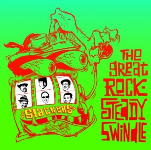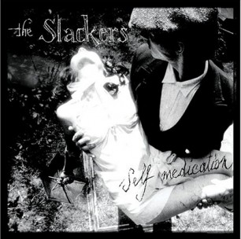
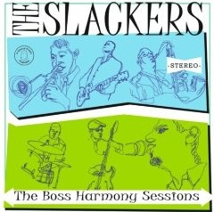
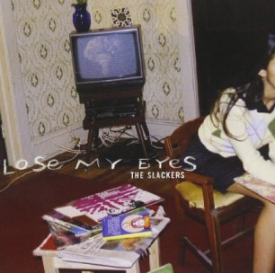
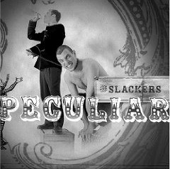
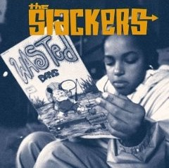
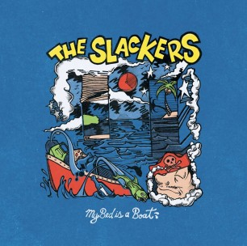
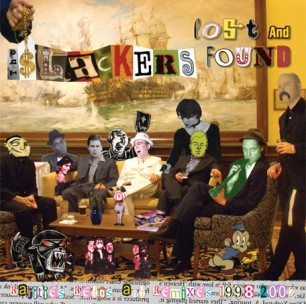

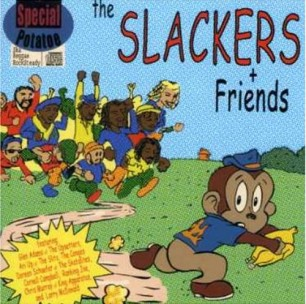
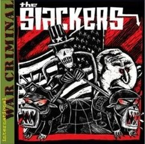
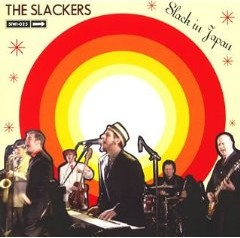
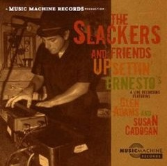
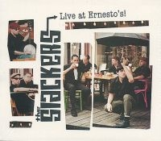
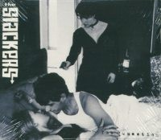
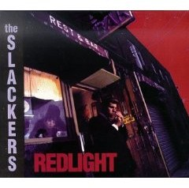
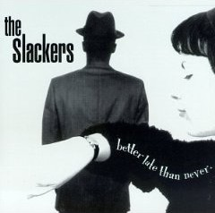
New York City’s The Slackers are probably the most constantly hard working band representing NYC SKA at this time. Not that this is a new phenomenon or anything, but whenever I look up or turn my head, The Slackers are going on tour, releasing something, or otherwise in the news with side projects and this or that. Kudos to them for continuing to keep the scene alive!
Since forming in 1991, the group has released a staggering 21 albums (studio and live,) a host of singles/EPs/collections, been featured on more compilations than they can even count. Better than that, our friends at Asbestos Records are getting ready to drop 2004’s International War Criminal on wax for the first time! Want more? OK, here’s more. The Slackers are also headlining the second night of Apple Stomp, taking place at NYC’s Irving Plaza on May 31st and June 1st! Check out the lineup and convince us this isn’t the best Ska lineup you have seen in years.
Or better yet, go grab a ticket and see why I’m right. Before the festival, I got in touch with keyboard/vocalist Vic Ruggiero to talk about the group’s 20+ career, the current state of Ska in NYC and beyond, the International War Criminal vinyl release and, of course, Apple Stomp!
G- Hi there and thank you very much for taking the time to speak with Live High Five! The Slackers never cease to amaze with their endless productivity… How has everything been going lately with the band?
Vic: You wouldn’t believe it, but the band has written a whole bunch of new songs and hasn’t stopped touring… So who else is on this Apple Stomp thing?
G- So getting right to it, let’s talk about The Apple Stomp! How pumped are you guys to be on such an amazing lineup, and who are you most excited to watch before/after your performance?
Vic: I’m curious to see Mephiskapheles. They always had some kinda swing.
G- This is a headlining gig in your hometown, so fans of The Slackers will be out in full force, you can bet. With so much talent on the bill and so much music to go around, are you planning any interesting set lists or special guests for the show?
Vic: Na, I think we’ll just bring the band.
It’s something good to just show our band, that’s just how its been out on the road…
This gig might attract folks that are gonna say “Yo, last time I saw the Slackers was 15 years ago!”Well, what should I say? “Thanks? For not comin’?”
Should we only do songs from after 2001, when most of those other bands quit?
I don’t think we’re one of those bands that made one good record and everything else sucked.
If anything, it’s our 1st record that’s the weakest, and its funny but I feel like our crowd discovers us at all different times. Folks say, “_______ is the BEST record,” and nobody says the same one.
G- To talk about product for a second, I’m proud to say my label, Instant Classic Records, was a backer for your International War Criminal release on vinyl. Have there been any other pressing of this on wax, and are there any goodies or additional artwork we should look forward to in the package?
Vic: I wish I could say the lyrics got changed from “Guantanamo Bay” to somethin’ else… But it’s still necessary to sing about “a racial prisoner” held on crap charges.
And there’s an alternate take of Glen’s soul number “What Went Wrong’ with Alex from Hepcat doing the backups with us. It was recorded at the studio that was Motown when it moved to LA, and the original Motown Hammond is on the track
G- Busy as you are, do you currently have, or are you working on, any releases right now? When will you be heading back to the studio or on the road?
Vic: Always. The band takes some breaks between recordings, but not too many. We got a new batch recorded. The next releases are gonna be in small batches because of the speed at which new releases are digested these days.
Its like the old singles mentality from the 60’s.
G- What vibe do you look for when playing your shows, and what should some of the first time listeners expect to see when you take the stage?
Vic:
"Don’t look…"
G- You’ve shared stages with the best and brightest of the Ska world and more, but are there any bands or artists that you hope to share a bill with in the future? If you could put together your own personal 3-band dream lineup to be on, who would you want to tour with and why?
Vic: Willie Nelson doing his reggae record and Bob Dylan as the DJ… He plays old 60’s Ska and Reggae on his radio show… He’d either love or hate The Slackers
G- What is the best, craziest, or most memorable show that you have played to date in NYC? Where was it and what was it like?
Vic: Geez Louize… We got shot at once down on the Lower East Side… How ‘bout that?
G- Lastly, as long-time musicians and band members, what advice can you give some of the young, up and coming bands everywhere who want to make it in music, on the road, and as a professional musician?
Vic: Don’t listen to what anybody says…
Want More?
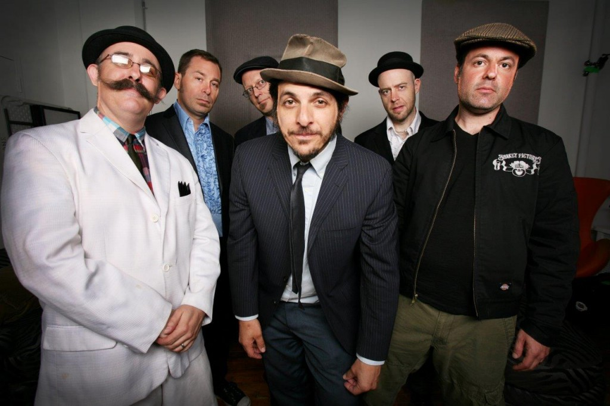